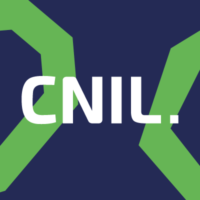

À propos
Je m'appelle Swann Brillant, étudiant bachelor Chef de Projet Développement & Intelligence Artificielle à La Manu. Passionné par le développement et les nouvelles technologies, j’ai acquis de solides compétences en programmation, que j'applique à travers divers projets académiques et personnels.
Je maîtrise les langages de développement web de base, ainsi que des technologies comme PHP, JavaScript, Python, Java, C#, Visual Basic, et SQL. J'ai également eu l'opportunité de mettre en pratique mes connaissances lors de mes différents stages chez Haropa Port et Roav7, où j'ai pu contribuer à des projets concrets dans un environnement professionnel.
En parallèle de mes études, je continue de développer mes compétences pour m’adapter aux besoins du secteur informatique en constante évolution, avec une curiosité et un souci de l’innovation.
Les outils que j'utilise
Mes certifications
-
Certification MOOC Anssi

Obtention de la certification MOOC Anssi en 2024
Le 21/11/2024
-
Certification MOOC CNIL RDPG
Obtention de la certification MOOC RGPD en 2023
Du 15/09/2023 au 06/10/2023